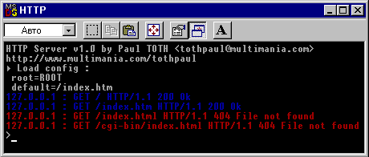

Delphi >>>
Сетевое программирование
Маленький многопоточный HTTP серверПростейший многопоточный HTTP сервер для Delphi32. Поддерживает только метод GET. Для работы с сокетами использует свой собственный модуль CrtSock. Реализован в виде консольного приложения, выводит на экран протокол обработки запросов. Совместимость: Delphi 2+  Скачать исходник: dhttp.zip (53k) |